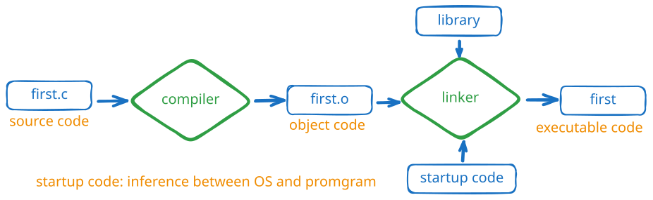

// first.c
#include <stdio.h>
int main(void) /* a simple program */
{
int num; /* define a variable called num */
num = 1; /* assign a value to num */
printf("I am a simple ");/* use the printf() function*/
printf("computer.\n");
printf("My favorite number is %d because it is first.\n",num);
return 0;
}

cc）cc first.c 会生成 a.out-o，比如 cc -o first first.c，会得到科执行文件 firstint main(void)是标准形式，如果写main()或者void main()，也可以成功编译但不推荐。int。int num的num。标识符的组成是小写字母、大写字母、数字和下划线，并且第1个字符必须是字符或下划线，不能是数字。_kcab）。